# Importing necessary libraries
import numpy as np
import pandas as pd
import matplotlib.pyplot as plt
import seaborn as sns
from sklearn.model_selection import train_test_split
from sklearn.linear_model import LinearRegression
from sklearn.metrics import mean_squared_error, r2_score
from statsmodels.graphics.tsaplots import plot_acf, plot_pacf
from statsmodels.tsa.arima.model import ARIMA
from statsmodels.tsa.statespace.tools import diffAutocorrelation Models
IN2004B: Generation of Value with Data Analytics
Agenda
- Autocorrelation
- The ARIMA model
- The SARIMA model
Load the libraries
Before we start, let’s import the data science libraries into Python.
Here, we use specific functions from the pandas, matplotlib, seaborn, sklearn and statsmodels libraries in Python.
Autocorrelation
Problem with linear regression models
Linear regression models do not incorporate the dependence between consecutive values in a time series.
This is unfortunate because responses recorded over close time periods tend to be correlated. This correlation is called the autocorrelation of the time series.
Autocorrelation helps us develop a model that can make better predictions of future responses.
What is correlation?
It is a measure of the strength and direction of the linear relationship between two numerical variables.
Specifically, it is used to assess the relationship between two sets of observations.
Correlation is between \(-1\) and 1.
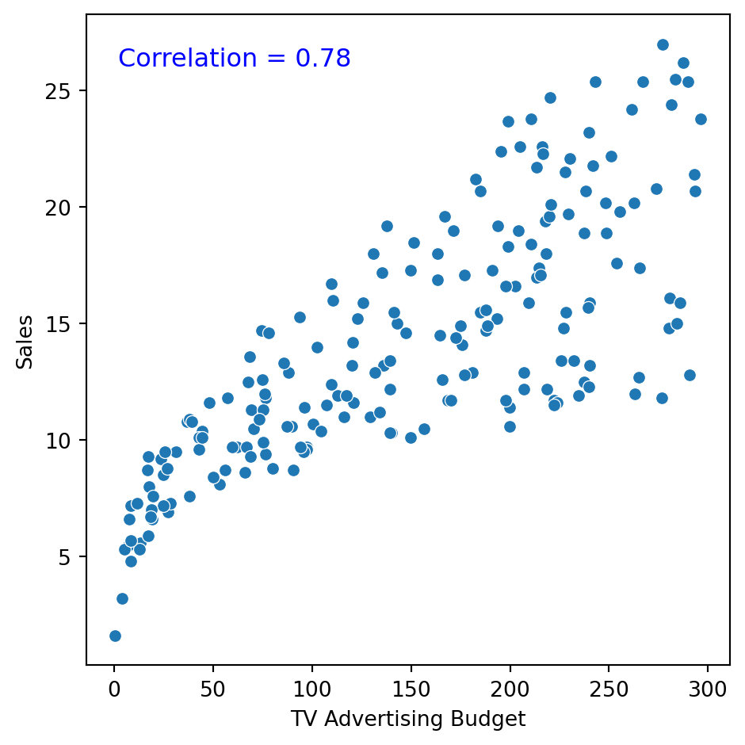
How do we measure autocorrelation?
There are two formal tools for measuring the correlation between observations in a time series:
The autocorrelation function.
The partial autocorrelation function.
The autocorrelation function
Measures the correlation between responses separated by \(j\) periods.
For example, consider the autocorrelation between the current temperature and the temperature recorded the day before.
. . .
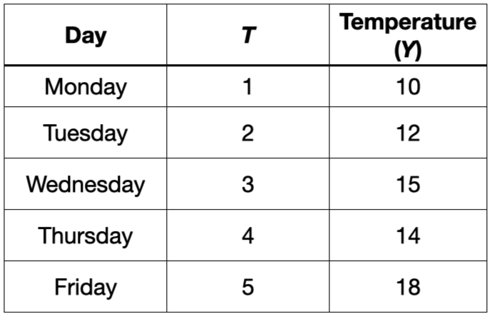
The autocorrelation function
Measures the correlation between responses separated by \(j\) periods.
For example, consider the autocorrelation between the current temperature and the temperature recorded the day before.

The autocorrelation function
Measures the correlation between responses separated by \(j\) periods.
For example, consider the autocorrelation between the current temperature and the temperature recorded the day before. This would be the correlation between these two columns
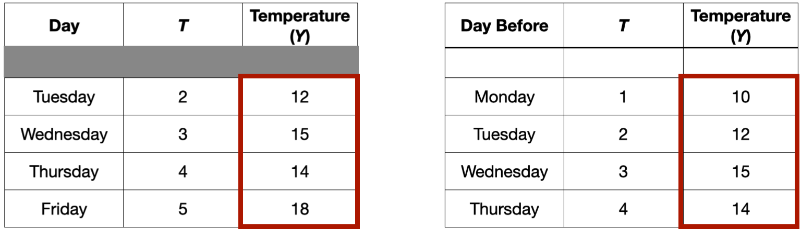
Example 1
Let’s consider again the dataset in the file “Amtrak.xlsx.” The file contains records of Amtrak passenger numbers from January 1991 to March 2004.
| Month | t | Ridership (in 000s) | Season | |
|---|---|---|---|---|
| 0 | 1991-01-01 | 1 | 1708.917 | Jan |
| 1 | 1991-02-01 | 2 | 1620.586 | Feb |
| 2 | 1991-03-04 | 3 | 1972.715 | Mar |
| 3 | 1991-04-04 | 4 | 1811.665 | Apr |
| 4 | 1991-05-05 | 5 | 1974.964 | May |

Autocorrelation function
The autocorrelation function measures the correlation between responses that are separated by a specific number of periods.
The autocorrelation function is commonly visualized using a bar chart.
The vertical axis shows the differences (or lags) between the periods considered, and the horizontal axis shows the correlations between observations at different lags.
Autocorrelation plot
In Python, we use the plot_acf function from the statsmodels library.
plt.figure(figsize=(10, 6))
plot_acf(Amtrak_data['Ridership (in 000s)'], lags = 25)
plt.xlabel("Lag")
plt.ylabel("Correlation")
plt.show()The lags parameter controls the number of periods for which to compute the autocorrelation function.
The resulting plot
<Figure size 960x576 with 0 Axes>
The autocorrelation plot shows that the responses and those from zero periods ago have a correlation of 1.
The autocorrelation plot shows that the responses and those from one period ago have a correlation of around 0.45.
The autocorrelation plot shows that the responses and those from 24 periods ago have a correlation of around 0.5.
<Figure size 384x384 with 0 Axes>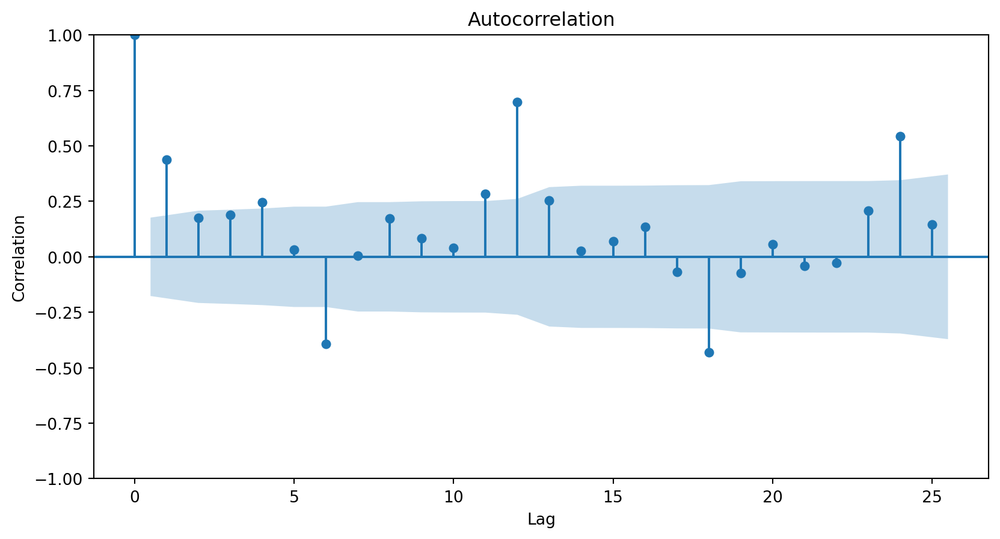
Autocorrelation patterns
A strong autocorrelation (positive or negative) with a lag \(j\) greater than 1 and its multiples (\(2k, 3k, \ldots\)) typically reflects a cyclical pattern or seasonality.
Positive lag-1 autocorrelation describes a series in which consecutive values generally move in the same direction.
Negative lag-1 autocorrelation reflects oscillations in the series, where high values (generally) are immediately followed by low values and vice versa.
More about the autocorrelation function
Consider the problem of predicting the average price of a kilo of avocado this month.
For this, we have the average price from last month and the month before that.
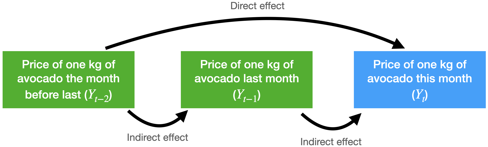
The autocorrelation function for \(Y_t\) and \(Y_{t-2}\) includes the direct and indirect effect of \(Y_{t-2}\) on \(Y_t\).
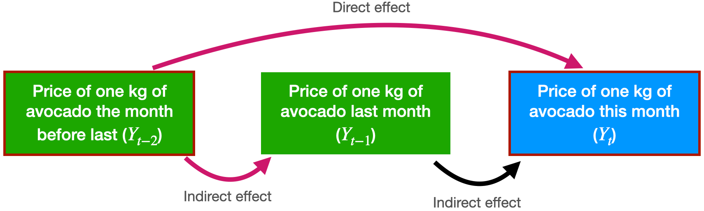
Partial autocorrelation function
Measures the correlation between responses that are separated by \(j\) periods, excluding correlation due to responses separated by intervening periods.
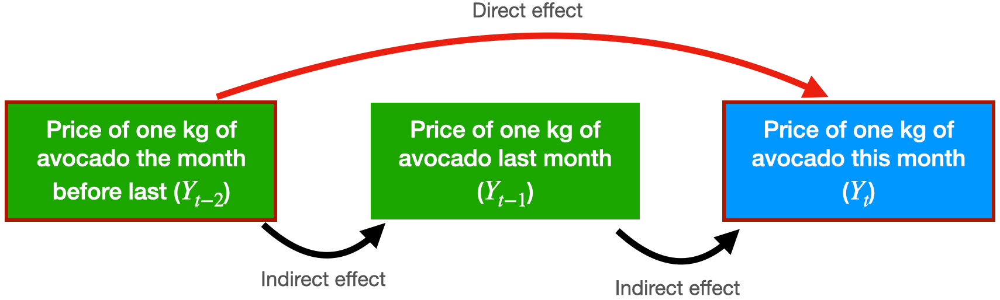
In technical terms, the partial autocorrelation function fits the following linear regression model
\[\hat{Y}_t = \hat{\beta}_1 Y_{t-1} + \hat{\beta}_2 Y_{t-2}\] Where:
- \(\hat{Y}_{t}\) is the predicted response at the current time (\(t\)).
- \(\hat{\beta}_1\) is the direct effect of \(Y_{t-1}\) on predicting \(Y_{t}\).
- \(\hat{\beta}_2\) is the direct effect of \(Y_{t-2}\) on predicting \(Y_{t}\).
The partial autocorrelation between \(Y_t\) and \(Y_{t-2}\) is equal to \(\hat{\beta}_2\).
The partial autocorrelation function is visualized using a graph similar to that for autocorrelation.
The vertical axis shows the differences (or lags) between the periods considered, and the horizontal axis shows the partial correlations between observations at different lags.
In Python, we use the plot_pacf function from statsmodels.
plt.figure(figsize=(10, 6))
plot_pacf(Amtrak_data['Ridership (in 000s)'], lags = 25)
plt.xlabel("Lag")
plt.ylabel("Correlation")
plt.show()The partial autocorrelation plot shows that the responses and those from one period ago have a correlation of around 0.45. This is the same for the autocorrelation plot.
The partial autocorrelation plot shows that the responses and those from two periods ago have a correlation near 0.
<Figure size 960x576 with 0 Axes>
The ARIMA Model
Autoregressive models
Autoregressive models are a type of linear regression model that directly incorporate the autocorrelation of the time series to predict the current response.
Their main characteristic is that the predictors of the current value of the series are its past values.
An autoregressive model of order 2 has the mathematical form: \(\hat{Y}_t = \hat{\beta}_0 + \hat{\beta}_1 Y_{t-1} + \hat{\beta}_2 Y_{t-2}.\)
An order 3 model looks like this: \(\hat{Y}_t = \hat{\beta}_0 + \hat{\beta}_1 Y_{t-1} + \hat{\beta}_2 Y_{t-2} + \hat{\beta}_3 Y_{t-3}.\)
ARIMA models
A special class of autoregressive models are ARIMA (Autoregressive Integrated Moving Average).
. . .
An ARIMA model consists of three elements:
- Integrated operators (integrated).
- Autoregressive terms (autoregressive).
- Stochastic terms (moving average).
1. Integrated or differentiatedoperators (I)
They create a new variable \(Z_t\), which equals the difference between the current response and the delayed response by a number of periods or lags.
There are three common levels of differentiation:
- Level 0: \(Z_t = Y_t\).
- Level 1: \(Z_t = Y_t - Y_{t-1}\).
- Level 2: \(Z_t = (Y_t - Y_{t-1}) - (Y_{t-1} - Y_{t-2})\).
Example 2
We consider the time series “CanadianWorkHours.xlsx” that contains the average hours worked by a certain group of workers over a certain range of years.
CanadianWorkHours = pd.read_excel('CanadianWorkHours.xlsx')
CanadianWorkHours.head(4)| Year | Hours per Week | |
|---|---|---|
| 0 | 1966 | 37.2 |
| 1 | 1967 | 37.0 |
| 2 | 1968 | 37.4 |
| 3 | 1969 | 37.5 |
Creating a train and a validation data
Recall that we would like to train the model on earlier time periods and test it on later ones. To this end, we make the split using the code below.
# Define the split point
split_ratio = 0.8 # 80% train, 20% test
split_point = int(len(CanadianWorkHours) * split_ratio)
# Split the data
Canadian_train = CanadianWorkHours[:split_point]
Canadian_validation = CanadianWorkHours[split_point:]We use 80% of the time series for training and the rest for validation.
Training data
Code
plt.figure(figsize=(10, 6))
sns.lineplot(x='Year', y='Hours per Week', data = Canadian_train)
plt.xlabel('Year')
plt.ylabel('Hours per Week')
plt.title('Hours per Week Over Time')
plt.show()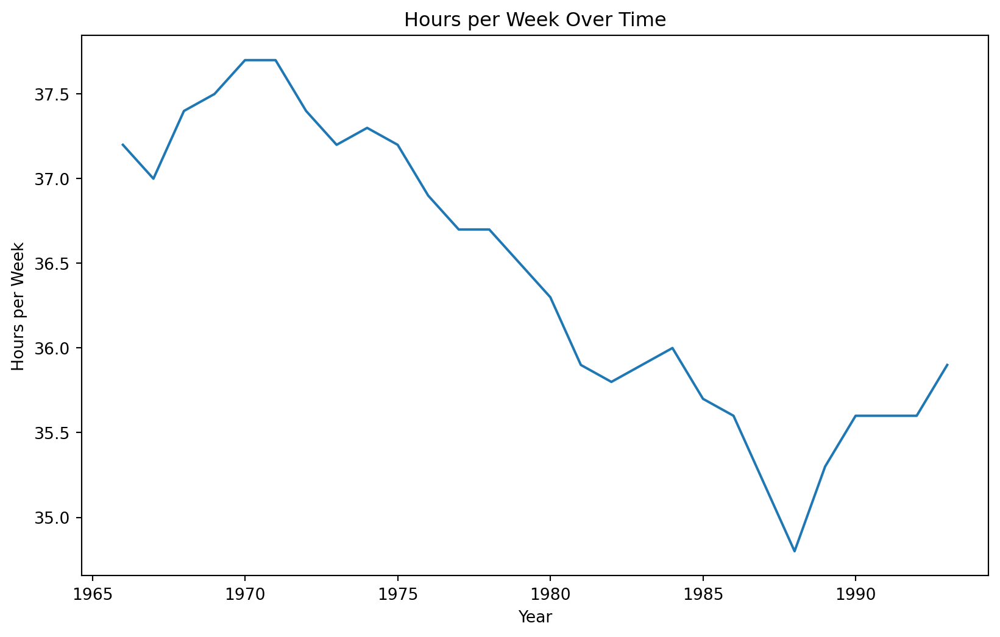
In statsmodels, we apply the integration operator using the pre-loaded diff() function. The function’s k_diff argument specifies the order or level of the operator.
First, let’s use a level-1 operator.
Z_series_one = diff(Canadian_train['Hours per Week'], k_diff = 1)The time series with a level-1 operator looks like this.
Code
plt.figure(figsize=(10, 6))
sns.lineplot(x=Canadian_train['Year'], y=Z_series_one)
plt.xlabel('Year')
plt.ylabel('Difference Level 1')
plt.show()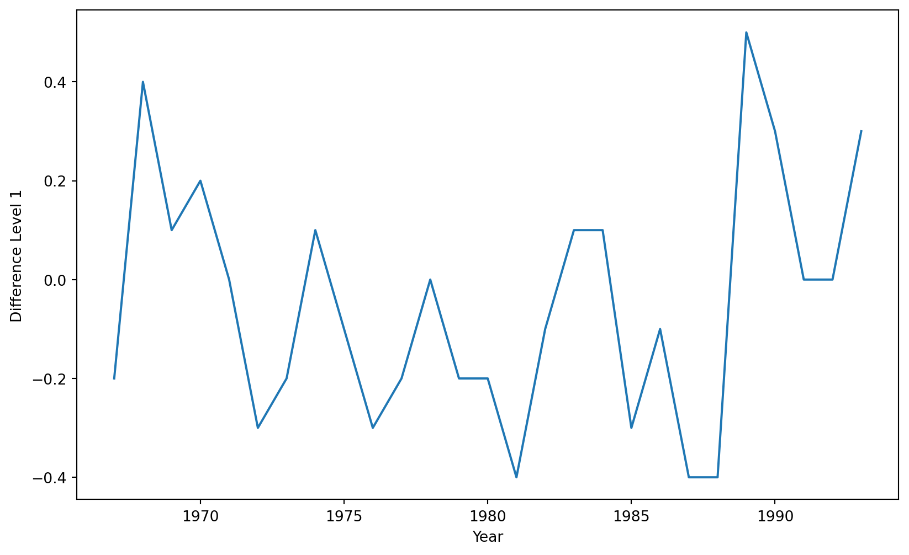
A level-2 operator would work like this.
Z_series_two = diff(Canadian_train['Hours per Week'], k_diff = 2)Code
plt.figure(figsize=(9, 5))
sns.lineplot(x=Canadian_train['Year'], y=Z_series_two)
plt.xlabel('Year')
plt.ylabel('Difference Level 2')
plt.show()
We see that the level 2 operator is more successful in removing the trend from the original time series.


How do we determine the operator level?
Visualizing the time series and determining whether there is a linear or quadratic trend.
If level 1 and level 2 operators yield similar results, we choose level 1 because it is simpler.
Once this is done, we set our transformed variable \(Z_t\) as the new response variable.
2. Autoregressive (AR) terms
Here we use autoregressive models, but with the new response variable \(Z_t\).
We can have different levels of order (or number of terms) in the autoregression model. For example:
Order 1 model: \(\hat{Z}_t = \hat{\beta}_0 + \hat{\beta}_1 Z_{t-1}\).
Order 2 model: \(\hat{Z}_t = \hat{\beta}_0 + \hat{\beta}_1 Z_{t-1} + \hat{\beta}_2 Z_{t-2}\).
If necessary, we can exclude the constant coefficient \(\hat{\beta}_0\) from the model.
How do we determine the number of terms?
Using the correlation functions (ACF) and partial correlation functions (PACF) of the differenced series.
<Figure size 288x288 with 0 Axes>
<Figure size 288x288 with 0 Axes>
To achieve this, we have some rules.
Rule 1
A first-order autoregressive model has:
An ACF with a single peak at the first period difference (lag).
An ACF with exponentially decreasing correlations.
Rule 2
A second-order autoregressive model has:
A PACF with two peaks at the first period differences (lags).
An ACF with correlations that decrease positively and negatively but approach zero.
Rule 3
If the PACF of the differenced series \(Z_t\) shows a higher partial correlation than the others and/or the lag-1 autocorrelation is positive, then consider adding an AR term to the model.
The lag at which the PACF cuts off from the confidence limits in the software is the indicated number of AR terms.
Following part 1 of Rule 1, we conclude that an autoregressive term of order 2 will be sufficient to capture the relationships between the elements of the series.
<Figure size 288x288 with 0 Axes>
3. Stochastic Terms (Moving Averages, MA)
Instead of using past values of the response variable, a moving average model uses stochastic terms to predict the current response. The model has different versions depending on the number of errors used to predict the response. For example:
- MA of order 1: \(Z_t = \theta_0 + \theta_1 a_{t-1}\);
- MA of order 2: \(Z_t = \theta_0 + \theta_1 a_{t-1} + \theta_2 a_{t-2}\),
where \(\theta_0\) is a constant and \(a_t\) are terms from a white noise series (i.e., random terms).
How do I choose the order of the MAs?
Rule 4: MA models have:
Correlations other than 0 in the ACF. The lags at which this occurs indicate the terms to include in the MA model.
Correlations in the PACF that gradually decrease to zero in some way.
This means that to determine the order, we focus primarily on the autocorrelation function. Remember, it’s the autocorrelation function of the series after it’s been differentiated.
<Figure size 288x288 with 0 Axes>
Since there is no significant correlation for any lag above 0, we do not need any MA elements to model the series.
<Figure size 288x288 with 0 Axes>
ARIMA
Define the response differentiation level and create \(Z_t\).
Define the order of the AR model (e.g., order 2).
Define the order of the MA model (e.g., order 1).
. . .
\[\hat{Z}_t = \hat{\beta}_0 + \hat{\beta}_1 Z_{t-1} + \hat{\beta}_2 Z_{t-2} + \theta_1 a_{t-1}\]
. . .
The ARIMA model coefficients are estimated using an advanced method that takes into account the dependencies between the time series responses.
ARIMA in Pyhon
To fit an ARIMA model, we use the ARIMA() function from statsmodels.
The function has an important argument called order, which equals (p,d,q), where
pis the order of the autoregressive model.dis the level of the integration or differencing operator.qis the number of elements in the moving average.
From our previous analysis of the training data for the Canadian workhours example, we conclude that:
We must use a level-2 differencing operator to remove the quadratic trend from the series. Therefore,
d = 2.One autoregressive term should be sufficient to capture the patterns in the time series. Therefore,
p = 2.It is not necessary to have moving average terms. Therefore,
q = 0.
Once this is defined, we can train an ARIMA model using the training data with the following code:
Arima_Canadian = ARIMA(Canadian_train['Hours per Week'],
order=(2, 2, 0))
results_ARIMA_Canadian = Arima_Canadian.fit()Technically, ARIMA() defines the model and .fit() fits the model to the data using maximum likelihood estimation.
After fitting, we can get a summary of the model fit using the following code.
print(results_ARIMA_Canadian.summary()) SARIMAX Results
==============================================================================
Dep. Variable: Hours per Week No. Observations: 28
Model: ARIMA(2, 2, 0) Log Likelihood -2.537
Date: Thu, 07 Aug 2025 AIC 11.074
Time: 16:42:51 BIC 14.849
Sample: 0 HQIC 12.161
- 28
Covariance Type: opg
==============================================================================
coef std err z P>|z| [0.025 0.975]
------------------------------------------------------------------------------
ar.L1 -0.3236 0.403 -0.803 0.422 -1.113 0.466
ar.L2 -0.4401 0.250 -1.760 0.078 -0.930 0.050
sigma2 0.0699 0.021 3.356 0.001 0.029 0.111
===================================================================================
Ljung-Box (L1) (Q): 0.26 Jarque-Bera (JB): 3.02
Prob(Q): 0.61 Prob(JB): 0.22
Heteroskedasticity (H): 1.48 Skew: 0.74
Prob(H) (two-sided): 0.57 Kurtosis: 3.75
===================================================================================
Warnings:
[1] Covariance matrix calculated using the outer product of gradients (complex-step).The next step in evaluating an ARIMA model is to study the model’s residuals to ensure there is nothing else to explain in the model.
We can obtain the residuals using the following code.
ARIMA_residuals = results_ARIMA_Canadian.resid
ARIMA_residuals = ARIMA_residuals.drop(0)Time series of residuals
Code
plt.figure(figsize=(10, 6))
sns.lineplot(x=Canadian_train['Year'], y=ARIMA_residuals)
plt.xlabel('Year')
plt.ylabel('Residuals')
plt.show()
Correlation plots
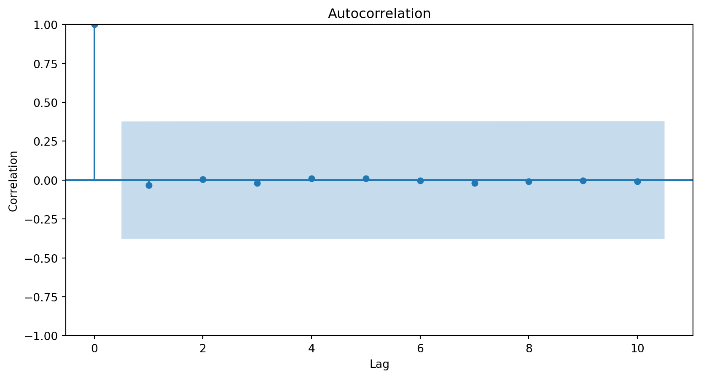

The three graphs show no obvious patterns or significant correlations between the residuals. Therefore, we say the model is correct.
Forecast
Once the model is validated, we make predictions for elements in the time series.
To predict the average number of hours worked in the next, say, 3 years, we use the .forecast() function. The steps argument indicates the number of steps in the future to make the predictions.
results_ARIMA_Canadian.forecast(steps = 3)28 36.102917
29 36.205233
30 36.382827
Name: predicted_mean, dtype: float64Model evaluation using MSE
Instead of evaluating the ARIMA model using graphical analyses of the residuals, we can take a more data-driven approach and evaluate the model using the mean squared error (MSE) or root MSE.
To this end, we simply use the mean_squared_error() function with the validation responses and our predictions.
Validation data
Canadian_validation| Year | Hours per Week | |
|---|---|---|
| 28 | 1994 | 36.0 |
| 29 | 1995 | 35.7 |
| 30 | 1996 | 35.7 |
| 31 | 1997 | 35.5 |
| 32 | 1998 | 35.6 |
| 33 | 1999 | 36.3 |
| 34 | 2000 | 36.5 |
The validation data has 7 time periods that can be determined using the command below.
len(Canadian_validation)7So, we must forecast 7 periods ahead using our ARIMA model.
forecast_Canadian = results_ARIMA_Canadian.forecast(steps = 7)
forecast_Canadian28 36.102917
29 36.205233
30 36.382827
31 36.580331
32 36.738265
33 36.900243
34 37.078325
Name: predicted_mean, dtype: float64Using the forecast and validation data, we compute the RMSE.
mse = mean_squared_error(Canadian_validation["Hours per Week"], forecast_Canadian)
print(round(mse**(1/2), 2))0.75We can also compute the \(R^2\) score.
rtwo = r2_score(Canadian_validation["Hours per Week"], forecast_Canadian)
print(round(rtwo, 2))-3.52A negative signifies that the model’s predictions are worse than simply predicting the average of the response
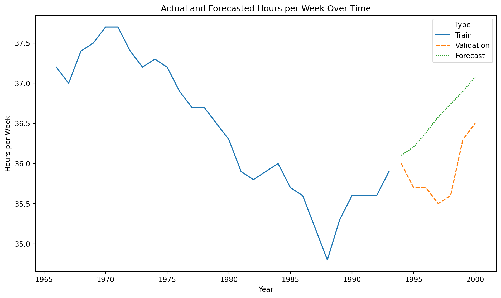
The SARIMA Model
Seasonality
Seasonality consists of repetitive or cyclical behavior that occurs with a constant frequency.
It can be identified from the series graph or using the ACF and PACF.
To do this, we must have removed the trend.
Example 3
We use the Airline data containing the number of passengers of an international airline per month between 1949 and 1960.
Airline_data = pd.read_excel("Airline.xlsx")
Airline_data.head()| T | Number of passengers | |
|---|---|---|
| 0 | 1 | 112 |
| 1 | 2 | 118 |
| 2 | 3 | 132 |
| 3 | 4 | 129 |
| 4 | 5 | 121 |
Create training and validation data
We use 80% of the time series for training and the rest for validation.
# Define the split point
split_ratio = 0.8 # 80% train, 20% test
split_point = int(len(Airline_data) * split_ratio)
# Split the data
Airline_train = Airline_data[:split_point]
Airline_validation = Airline_data[split_point:]Training data
Code
plt.figure(figsize=(8, 5))
sns.lineplot(x='T', y='Number of passengers', data = Airline_train)
plt.xlabel('T')
plt.ylabel('Number of passengers')
plt.xticks(rotation=45)
plt.tight_layout()
plt.show()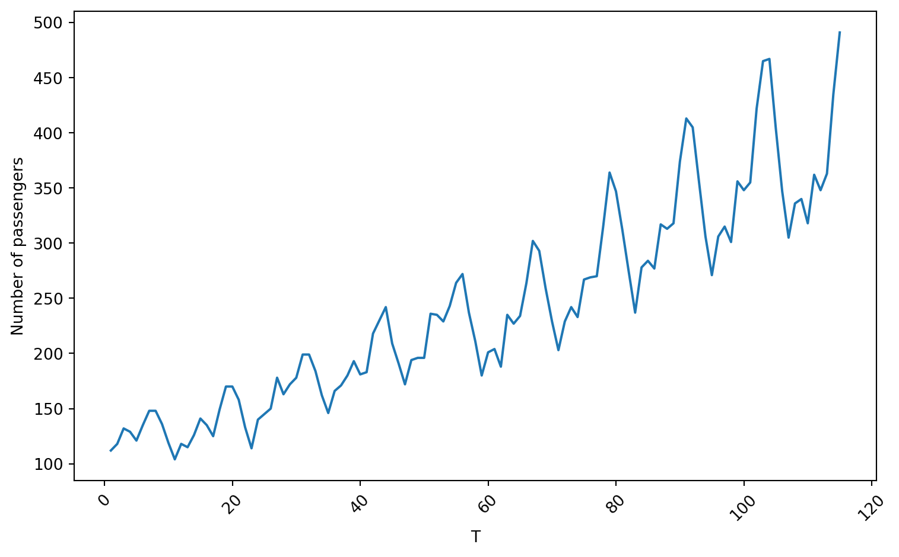
First, let’s use a level-1 operator.
Z_series_one = diff(Airline_train['Number of passengers'], k_diff = 1)Code
plt.figure(figsize=(8, 5))
sns.lineplot(x=Airline_train['Number of passengers'], y=Z_series_one)
plt.xlabel('T')
plt.ylabel('Difference Level 1')
plt.show()
Autocorrelation plots
<Figure size 288x288 with 0 Axes>
<Figure size 288x288 with 0 Axes>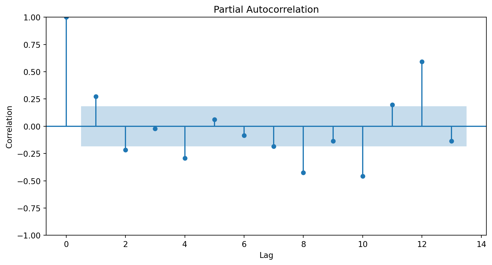
SARIMA model
The SARIMA (Seasonal Autoregressive Integrated Moving Average) model is an extension of the ARIMA model for modeling seasonality patterns.
The SARIMA model has three additional elements for modeling seasonality in time series.
- Differenced or integrated operators (integrated) for seasonality.
- Autoregressive terms (autoregressive) for seasonality.
- Stochastic terms or moving averages (moving average) for seasonality.
Notation
Seasonality in a time series is a regular pattern of change that repeats over \(S\) time periods, where \(S\) defines the number of time periods until the pattern repeats again.
For example, there is seasonality in monthly data, where high values always tend to occur in some particular months and low values always tend to occur in other particular months.
In this case, \(S=12\) (months per year) is the length of periodic seasonal behavior. For quarterly data, \(S=4\) time periods per year.
Seasonal differentiation
This is the difference between a response and a response with a lag that is a multiple of \(S\).
For example, with monthly data \(S=12\),
- A level 1 seasonal difference is \(Y_{t} - Y_{t-12}\).
- A level 2 seasonal difference is \((Y_{t-12}) - (Y_{t-12} - Y_{t-24})\).
Seasonal differencing eliminates the seasonal trend and can also eliminate a type of nonstationarity caused by a seasonal random walk.
Seasonal AR and MA Terms
In SARIMA, the seasonal AR and MA component terms predict the current response (\(Y_t\)) using responses and errors at times with lags that are multiples of \(S\).
For example, with monthly data \(S = 12\),
- The first-order seasonal AR model would use \(Y_{t-12}\) to predict \(Y_{t}\).
- The second-order seasonal AR model would use \(Y_{t-12}\) and \(Y_{t-24}\) to predict \(Y_{t}\).
- The first-order seasonal MA model would use the stochastic term \(a_{t-12}\) as a predictor.
- The second-order seasonal MA model would use the stochastic terms \(a_{t-12}\) and \(a_{t-24}\) as predictors.
To fit the SARIMA model, we use the ARIMA() function from statsmodels, but with an additional argument, seasonal_order=(0, 0, 0, 0).
This is the order (P, D, Q, s) of the seasonal component of the model for the autoregressive parameters, differencing operator levels, moving average parameters, and periodicity.
Recall that the function has the argument order = (p, d, q) where p is the order of the autoregressive model, d is the differencing operator level, and q is the number of elements in the moving average.
These arguments capture the detailed information of the time series, while seasonal_order captures the patterns given by seasonality.
Let’s fit a SARIMA model.
SARIMA_model = ARIMA(Airline_train['Number of passengers'], order=(1, 2, 1),
seasonal_order=(1, 1, 0, 12))
SARIMA_Airline = SARIMA_model.fit()Summary of fit
print(SARIMA_Airline.summary()) SARIMAX Results
=========================================================================================
Dep. Variable: Number of passengers No. Observations: 115
Model: ARIMA(1, 2, 1)x(1, 1, [], 12) Log Likelihood -374.241
Date: Thu, 07 Aug 2025 AIC 756.482
Time: 16:42:54 BIC 766.943
Sample: 0 HQIC 760.717
- 115
Covariance Type: opg
==============================================================================
coef std err z P>|z| [0.025 0.975]
------------------------------------------------------------------------------
ar.L1 -0.1729 0.094 -1.833 0.067 -0.358 0.012
ma.L1 -0.9999 14.439 -0.069 0.945 -29.300 27.300
ar.S.L12 -0.1303 0.084 -1.543 0.123 -0.296 0.035
sigma2 91.7900 1326.009 0.069 0.945 -2507.139 2690.719
===================================================================================
Ljung-Box (L1) (Q): 0.00 Jarque-Bera (JB): 3.18
Prob(Q): 0.98 Prob(JB): 0.20
Heteroskedasticity (H): 1.13 Skew: 0.39
Prob(H) (two-sided): 0.73 Kurtosis: 2.64
===================================================================================
Warnings:
[1] Covariance matrix calculated using the outer product of gradients (complex-step).Residual analysis
We can have a graphical evaluation of the model’s performance using a residual analysis.
SARIMA_residuals = SARIMA_Airline.resid
SARIMA_residuals = SARIMA_residuals.drop(0)Code
plt.figure(figsize=(8, 3.5))
sns.lineplot(x=Airline_train['T'], y=SARIMA_residuals)
plt.xlabel('Year')
plt.ylabel('Residuals')
plt.show()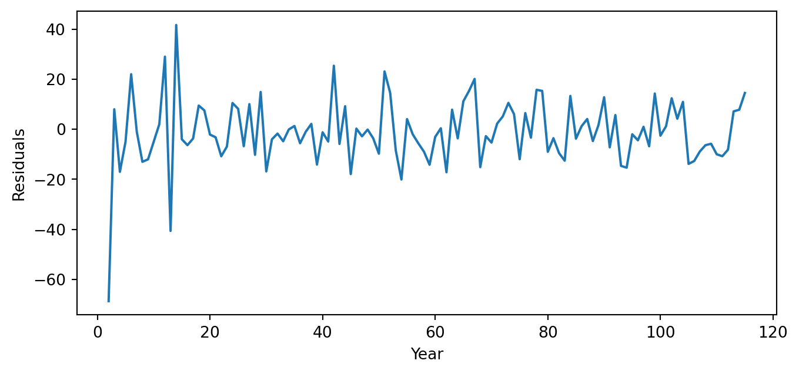
<Figure size 576x576 with 0 Axes>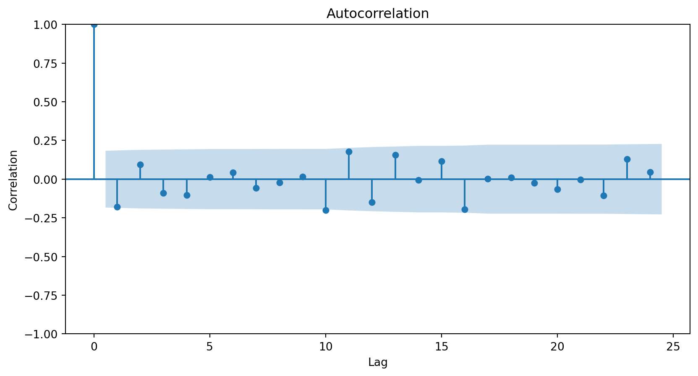
<Figure size 576x576 with 0 Axes>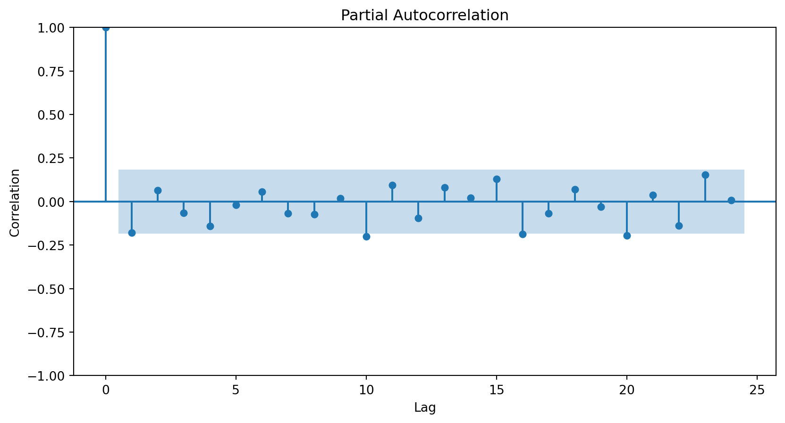
Validation
The validation data has 29 time periods that can be determined using the command below.
len(Airline_validation)29So, we must forecast 7 periods ahead using our SARIMA model.
forecast_Airline = SARIMA_Airline.forecast(steps = 29)
forecast_Airline.head(3)115 489.635426
116 428.961078
117 373.169684
Name: predicted_mean, dtype: float64Using the forecast and validation data, we compute the RMSE.
mse = mean_squared_error(Airline_validation["Number of passengers"],
forecast_Airline)
print(round(mse**(1/2), 2))26.39We can also compute the \(R^2\) score.
rtwo = r2_score(Airline_validation["Number of passengers"], forecast_Airline)
print(round(rtwo, 2))0.89
Comments
The differentiation operator removes or de-trends the time series.